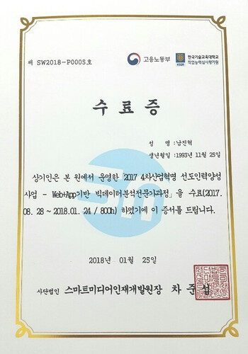

저는 4년제 컴퓨터공학과를 다니는 평범한 대학생이었습니다. 학점은 4점대를 넘길 정도로 남들도 보기에도 학업에 성실히 임해 온 사람이었습니다. 하지만 실무보다는 이론에 중심인 학교 교육으로 인해 막상 프로그래밍이라는 단어는 제게 어렵게 다가왔고 심지어 간단한 코딩을 하라고 하면 버벅대기 일쑤였습니다. 한참 길을 못찾던 찰나에 우연히 교내에 붙어있는 포스트를 보고 흥미를 가져 지원하게 되었고 처음부터 차근차근 알려주시는 교육과정을 통해 조금씩 자신감을 찾게 되었고 나아가 컴퓨터공학과에 다녔다는 자부심도 느끼게 되었습니다. 뿐만 아니라 여러 대학교 각자 다른 전공을 가진 사람들과 교육을 이수하니 문제에 대한 접근하는 사고가 발전하기도 하였고 워크숍을 통해서 조금 더 넓은 세상을 접해볼 수도 있었습니다. 800시간이라는 적지 않은 시간 성실히 교육에 임해 왔고 그렇게 하다 보니 멀게만 느껴졌던 취업이라는 것도 졸업하기도 전에 이루어냈습니다. 모든 대학교가 그런 것은 아니라고 보지만 적지 않은 대학교가 교육 이수하기 전의 저와 비슷한 처지일 거라고 생각합니다. 가만히 앉아서 무엇을, 누군가를 탓하기보단 한 발이라도 움직이면서 자신을 더 발전시킬 수 있는 계기를 만들어주는 것 그게 바로 이 교육과정의 매력이라고 생각합니다.
